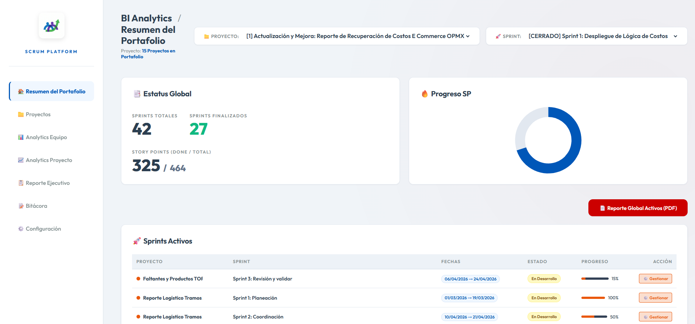
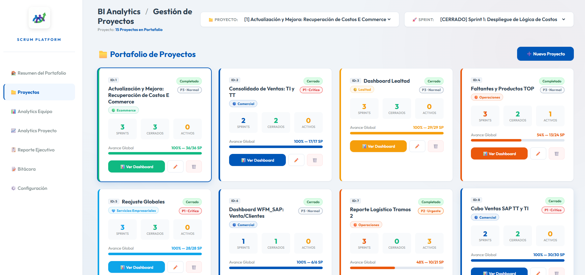

Estrategic Vision
Cerrando el Gap entre Ingeniería y Dirección
Como Head of BI, identifiqué que la fricción técnica a menudo oscurece la visión estratégica. Este framework transforma la bitácora técnica de Scrum en un centro de mando organizacional.

Visibilidad 360°
Consolidación de múltiples flujos de trabajo en un panel de salud orientado a OKRs.
Reporteo Automatizado
Eliminación del trabajo manual en la preparación de QBRs y revisiones mensuales.
High-Performance Ecosystem
Diseño serverless enfocado en la privacidad de datos corporativos y velocidad de respuesta instantánea.

Velocity & Performance Analytics
Monitoreo de curvas de aprendizaje y capacidad de entrega mediante métricas ágiles de alta fidelidad.


Zero-Bureaucracy Executive Reporting
Módulo de generación de reportes que proyecta la salud del proyecto directamente a la mesa directiva en formatos ejecutivos de alta calidad.